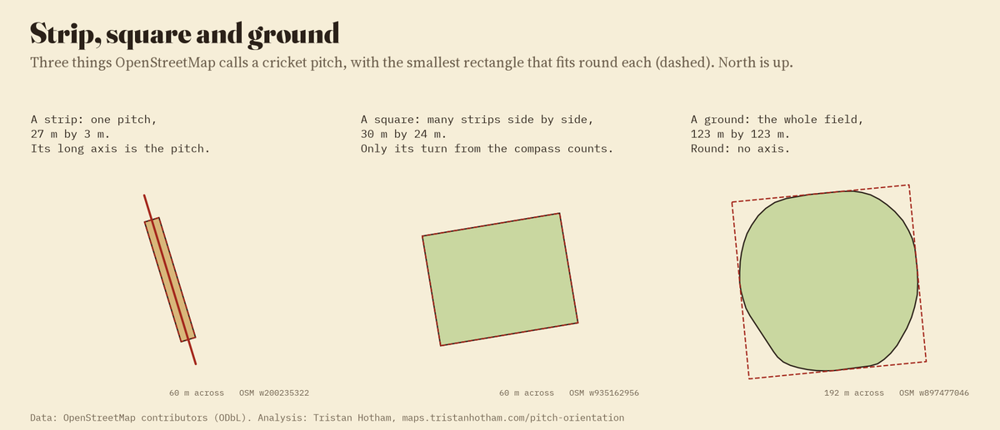
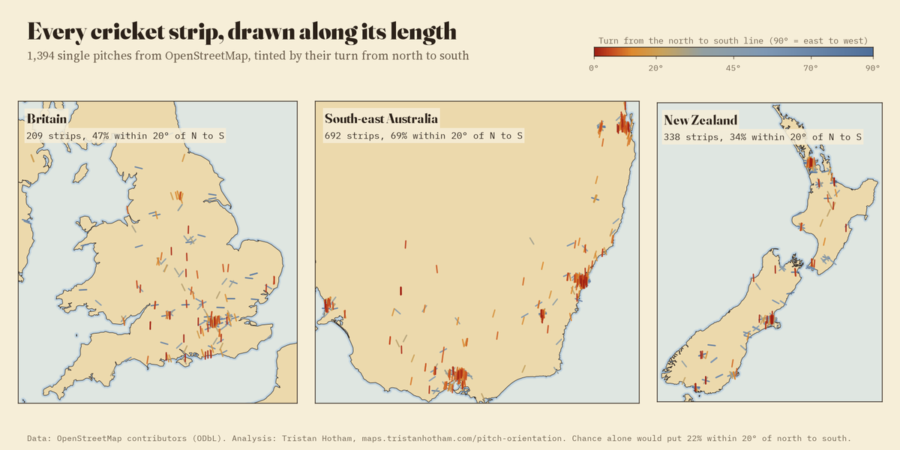
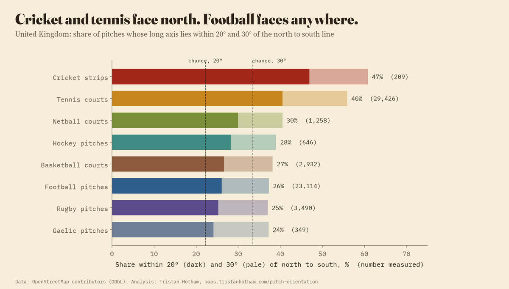
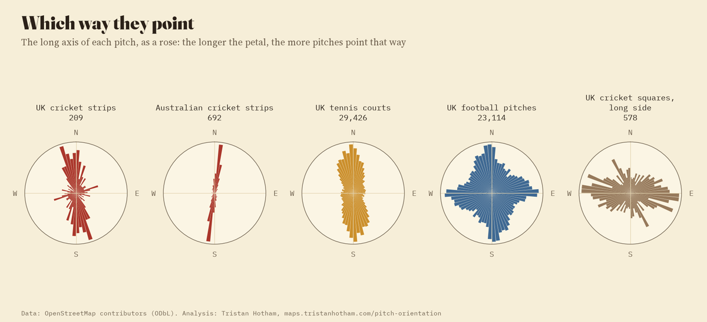
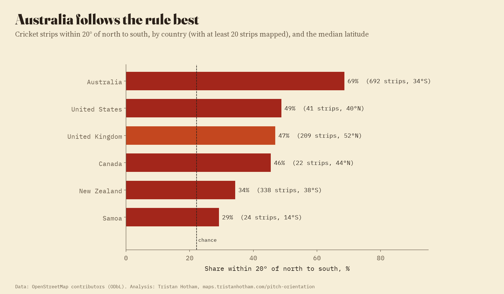
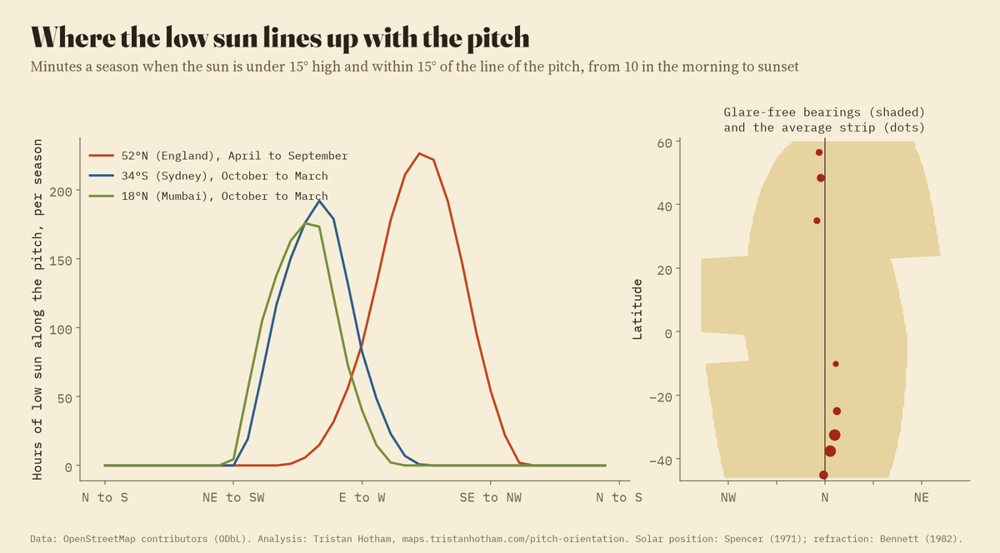
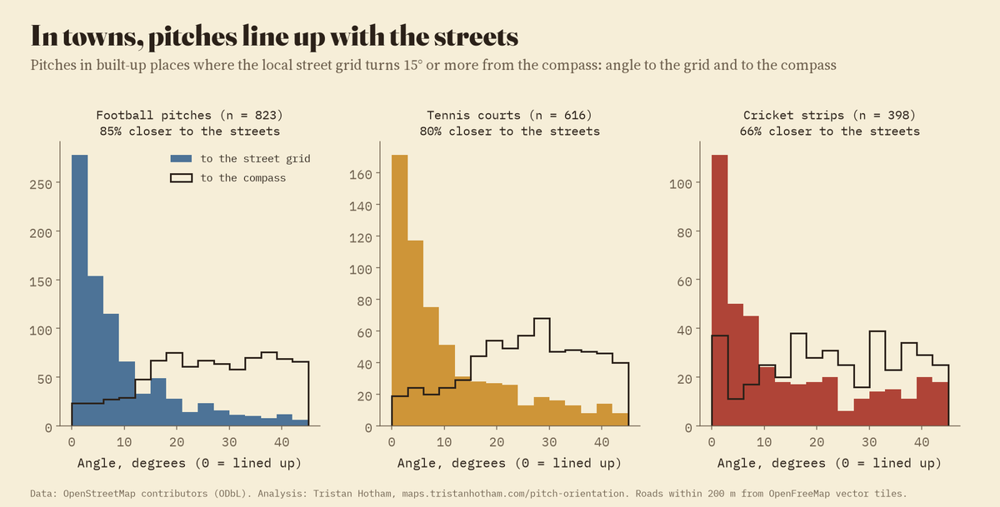

Every pitch in OpenStreetMap with a measurable length, tinted by how far it turns from north to south. Zoomed out, each rose shows the directions of the pitches in its square. Zoom in to see single pitches, and tap one.
Ask which way a cricket pitch should run and the design guides give one answer: roughly north to south. The game goes on into the evening, when the sun is low in the west, and a pitch that runs east to west would put that sun straight into the eyes of the batter at one end and the bowler at the other. Tennis courts get the same advice. FIFA's stadium guidelines say big football stadiums mostly run north to south too, but nobody seems to say much about the park pitch.
So I measured them. OpenStreetMap has the outline of 15,168 cricket pitches around the world and 84,853 sports pitches of every kind in the United Kingdom. For each I took the long axis of the smallest rectangle that fits round it and worked out how far it turns from the north to south line.
A cricket "pitch" means three different things, and OpenStreetMap mappers use the tag for all of them. The strip is the 22 yards between the wickets, a rectangle about 25.9 m by 2.9 m as mapped, and it has an obvious axis. The square is the block of a dozen or so strips laid side by side in the middle of a club ground; its strips could run along either side, so the only thing it can tell us is whether it is set square to the compass. The ground is the whole field, usually round or oval, with no axis at all. I sorted every cricket polygon by size and shape: 1,394 strips, 1,117 squares, 9,980 grounds and 562 practice nets, which are kept apart.

The three things mapped as a cricket pitch. Only the strip has an axis that is the pitch.
Of the 1,394 strips, 55% lie within 20° of the north to south line and 66% within 30°. A strip pointing at random would manage 22.2% and 33.3%. Only 9.9% run within 20° of east to west. In the United Kingdom the share is 47% of 209 strips; in Australia 69% of 692; in New Zealand only 34% of 338.
Club squares in the United Kingdom, where the strips themselves are seldom mapped, tell the same story in their own way: a square is usually wider across its strips than along them, and 32% of the 578 UK squares have their long side within 20° of east to west, against 17% with it north to south. Strips side by side across an east to west block run north to south.

Every mapped strip in the three countries with the most, tinted by its turn from north to south.
Among UK pitches of other sports, measured the same way, tennis courts come closest to cricket: 40% of 29,426 lie within 20° of north to south and only 12% within 20° of east to west. Netball manages 30%. Football (26%), rugby (25%) and Gaelic games (24%) sit near chance, and football and rugby pitches are as likely to run east to west (25% of football pitches) as north to south: they follow the shape of the field they were fitted into, not the sun.

United Kingdom, share within 20° and 30° of north to south, by sport.

The direction of every pitch, as a rose.
Strips are mapped in 25 countries, but only six have twenty or more. Australia leads with 69%, then the United States (49% of 41), the United Kingdom (47%), Canada (46% of 22), New Zealand (34%) and Samoa (29% of 24). In India, Pakistan, Sri Lanka, Bangladesh and the Caribbean, mappers have drawn grounds rather than strips, so the comparison cannot be made fairly; where an Indian ground is oval enough to have a long axis, 43% of 341 run within 20° of north to south.

Countries with at least 20 mapped strips.
To see what the rule protects against, I modelled the sun. For a pitch at a given latitude and direction, I counted the minutes in a cricket season when the sun is less than 15° high and within 15° of the line of the pitch, from 10 in the morning until sunset. At 52°N, in an English season from April to September, a pitch running east to west gets about 88 hours of that low sun along it; a pitch running north to south gets none. In fact any line from -33° to 61° from north is free of it, a wide arc that leans east, because the summer evening sun sets in the north-west. 74% of UK strips sit in that arc, against 53% by chance; of all strips worldwide, measured against their own latitude, 82% do.

The glare model: hours of low sun along the pitch per season, by direction, and the glare-free arc by latitude.
For every strip and square, and samples of other pitches, I read the roads within 200 m from OpenFreeMap's vector tiles and found the main direction of the local street grid. Where a pitch sits in a built-up place whose grid turns at least 15° from the compass, most pitches line up with the streets rather than the compass: 85% of football pitches, 80% of tennis courts, but only 66% of cricket strips, and 53% of Australian ones. Of the sports measured, cricket is the least likely to follow the streets, which fits a game that tries to keep the sun out of the batter's eyes.

Pitches in towns with a grid turned off the compass: angle to the street grid (bars) and to the compass (line).
Outlines. Every OpenStreetMap way or relation tagged as a pitch with a sport in the United Kingdom, and every cricket pitch way in the world, extracted with the QLever query engine. Each outline is laid flat around its own centre with north kept true; the long side of the smallest rectangle that fits round it gives the axis. Other sports were kept only where the rectangle has the size and shape of one playing area (for example a tennis court 22 to 42 m long and 1.6 to 2.6 times as long as wide), which drops blocks of several courts whose long side runs across them.
Checks. I drew every strip of a random sample with the roads and buildings around it and looked at them. About 10 in 120 were banks of practice nets at the edge of a ground, not the pitch in the middle. So rectangles 6 to 12 m wide, and strips just outside a mapped ground, are now counted as nets: 19.4% of the first strip list moved. A second sample of 60 found 1 doubtful case. Grounds with many mapped strips do not drive the result: counting each ground once, 54% lie within 20° of north to south.
On the map. To help you find your own ground, the map also shows 5,607 further cricket places that OpenStreetMap tags with the sport but draws without a cricket pitch outline: county stadiums, clubs mapped as a single point, sports centres and pitches shared with football or rugby. They have nothing to measure, so they are not part of any number here. I also gave 759 unnamed grounds the name of a club or stadium mapped within 150 m of them.
What it cannot say. OpenStreetMap is uneven: strips are mapped mostly in Australia, New Zealand and Britain, and hardly at all in South Asia and the Caribbean, where most cricket is played. The country of a pitch tells us nothing about who built it or when. The glare model is a simple one: it ignores trees, stands, cloud and the hours of real matches, and serves only to show which directions the low sun can reach.
| Country | Strips | Within 20° | Squares set to the compass (10°) | Oval grounds | Within 20° |
|---|---|---|---|---|---|
| United Kingdom | 209 | 47% | 28% | 763 | 28% |
| Australia | 692 | 69% | 50% | 1515 | 58% |
| New Zealand | 338 | 34% | 32% | 83 | 34% |
| India | 17 | 53% | 47% | 341 | 43% |
| South Africa | 13 | 46% | 29% | 129 | 35% |
| Pakistan | 3 | few | 17% | 69 | 29% |
| Sri Lanka | 1 | few | few | 65 | 26% |
| Bangladesh | 2 | few | few | 32 | 56% |
| Caribbean | 1 | few | few | 76 | 36% |
| United States | 41 | 49% | 47% | 52 | 42% |
| Canada | 22 | 46% | few | 15 | 53% |
| Samoa | 24 | 29% | few | 6 | few |
| Ireland | 2 | few | few | 17 | 29% |